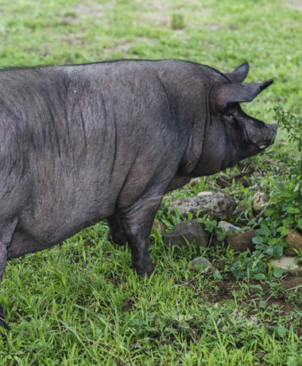
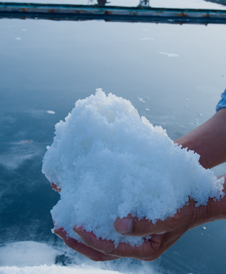
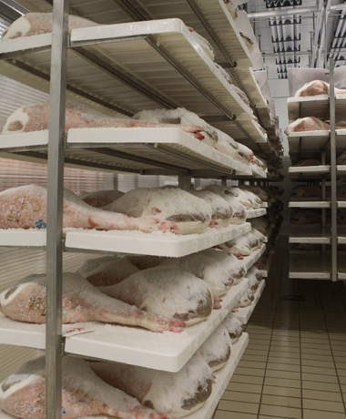

숙성을 통해 육질의 부드러움과 육즙의 풍미를 증진시킵니다.
냉장고 안에만 놔두는 여타의 다른 제품들과 달리 온도, 습도, 수분 활성도 등 5가지의 엄격한 관리를 통해 만들어지며
돼지고기의 목살과 삼겹살, 한우의 채끝, 안심, 등심 등의 제품을 만들어냅니다.
단백질과 지방의 조직감이 탄탄한 제주산 흑돼지에 신안산 천일염만으로 염장하여 18개월 동안 가열하지 않고
각 단계별로 맞춤 환경을 조성하여 흑돼지 고유의 맛과 풍미를 고스란히 느낄 수 있는 최고의 햄입니다.
천연 자연 속에서 숨 쉬는 돼지, 제주도 해발 600미터 한라산 자락에서 자란 제주 흑돼지로 만들었습니다.
맛부터 향까지 모두를 사로 잡는 깊은 풍미를 가진 하몽을 만들기 위해 깨끗하고 천연미네랄이 풍부한 신안산 천일염은 오랜기간 숙성과정을 돕는데 있어 매우 중요한 역할을 합니다.
우리나라 제주 흑돼지에 맞는 최적화된 발효·숙성 기술을 독자적으로 보유하고 있습니다.
